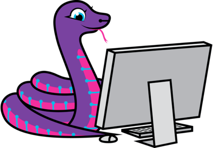
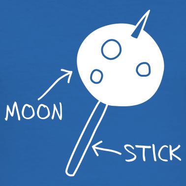

CircuitPython 2020

My buddy Scott, one of the wonderful people at Adafruit, recently asked folks in the wider CircuitPython community to share their thoughts about what they'd like to see for the project and community during 2020. This is my contribution to the conversation.
There are three aspects to my hopes for CircuitPython in 2020:
- Things I hope will continue,
- Developments I hope to happen,
- "Moon on a stick" wishes for the future.
I want to start by reaffirming my belief that Adafruit, and those involved with CircuitPython in particular, do inspiring stuff when it comes to fostering an open, welcoming, supportive and collaborative tech community. This is an extraordinary achievement. My own experience in the wider Python community is that it takes a huge amount of effort, patience, compassion and thoughtfulness to grow and sustain such a "scenius" (and, sadly, this can be destroyed very quickly by only a few bad actors). So my wish for continuation in 2020 is that everyone involved in the CircuitPython community grasp opportunities to enlarge positive aspects of ourselves such as mutual appreciation, the sharing of tools and techniques, latent network effects, and a spirit of tolerance, compassion and fun.
What I hope happens this year is a broadening of CircuitPython's horizons. My passion for tech can be summed up by a quote from David Allen, the producer on the original BBC micro from the 1980s -- my first computer. He explained that, "[t]he aim was to democratise computing. We didn't want people to be controlled by it, but to control it." CircuitPython feels to me like it sits very much in the hobbyist / enthusiast "segment" of users who already know something of programming. I'd love CircuitPython to make inroads into beginner related education. This probably involves a focus on learning what teachers would like from a coding platform, honest appraisals of how beginner coders (no matter their age or background) find their first steps with CircuitPython and Adafruit boards, as well as making the results of such findings accessible to all. This final point is important. Learning to code shouldn't just be an option for English speaking, able bodied folk from a cultural background that means examples and cultural assumptions are easily understood. I hope you agree that education should be an inclusive endeavour, and this takes concerted and conscientious effort. I hope the CircuitPython community find the time and space to invest in the (never finished) work such a focus entails.

My "moon on a stick" is a CircuitPython based mobile phone with a touch screen and a simple (PyperCard like?) Python UI that's easily hackable. Think of it as the open, easy-to-assemble, relatively cheap and "hack friendly" version of something like the Light Phone with all the schematics and design assets (e.g. files for 3d printing the case) available under open source licenses so folks can go mod-crazy. Now wouldn't that be a turn up for the books..?
I'll finish by wishing everyone in the CircuitPython a flourishing and happy new year. Here's to wonderful things in 2020.
Let's go..!
:-)